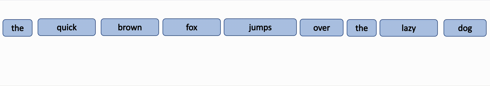
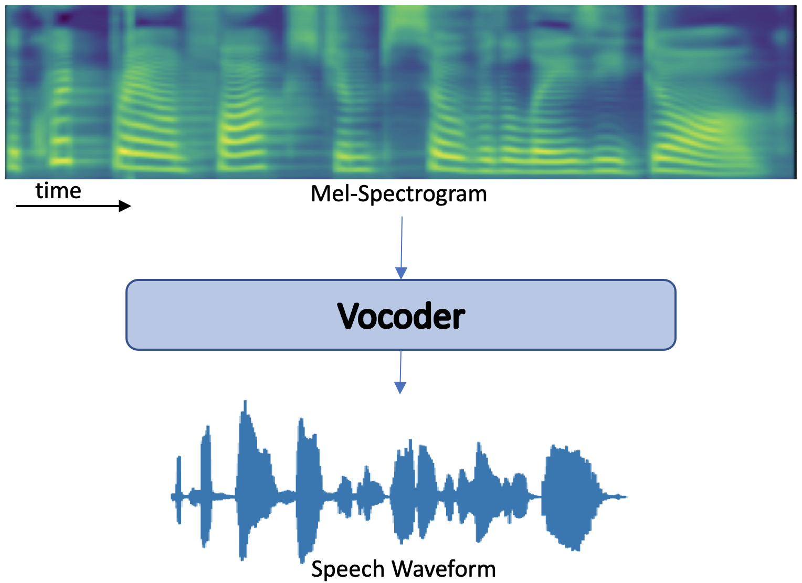

Speech Synthesis, also known as Text to Speech is the task of synthesizing natural and intelligible speech from text. Modern day TTS Systems
involve expertise from Machine Learning, Linguistics and Signal Processing. Research on TTS has shifted from Early Concatenative Synthesis, to Parametric Synthesis to Neural Speech Synthesis.
In this blog post, we give a high level overview of TTS Systems, and illustrate Why and How
Speech Output can be controlled. We specifically look at how output waveform and attention vary with the explicit introduction of pitch and emotion features.
Why Control ? In a traditional Machine Learning problem, generalization is achieved by throwing in more data. Unlike a traditional machine learning problem,
Text-To-Speech is a one-to-many mapping problem. For a given text, the output could be speech with varying voice, pitch, emotion, energy and duration.
Recent Research has demonstrated ability to control Duration, Pitch, Energy in the output speech. We first demonstrate how
1
Overview of Neural Text-to-Speech Synthesis
Text is first converted to linguistic features, and then acoustic features, followed by voice
Text Analysis module converts a text sequence into linguistic features.
Test for owner's possessive. Test for "quoting a passage." And another sentence. Or two. Some flopping fins; for
diving.
Text Analysis
Text Analysis converts text into rich information about pronunciation, rhythm, stress, intonation and prosody. These lingusitc features serve as the input to acoustic models.
Phonemes are one such way to repesent linguistic features. Phoneme is a perceptually distinct unit of sound.
English language has 44 phones, meaning pronunciation of any english word can be represented with these 44 phones.
Example: the: DH AHO, dog: D A01 G

Acoustic Model
Acoustic Models, are Sequence-To-Sequence models, to generate acoustic features from linguistic features, which are converted to waveform downstream.
The kind of input linguistic features and output acoustic feature decide the type of model. Mel-Capstral Coefficients, Mel-Generalized Coefficients, Linear Spectrograms, Mel-Spectrograms are examples of acoustic features.
Mel-Spectrogram is a widely used acoustic feature output, owing to it's minimal information loss.
Mel-Spectrogram Calculaton
Here's a test of an inline equation c = a^2 + b^2. Also with configurable katex standards just
using inline '$' signs: $$x^2$$ And then there's a block equation:
Vocoders are used to synthesize waveform from acoustic features. Neural Vocoders have recently gained popularity owing to their higher speech quality.
Since speech waveform is very long, autoregressive waveform generation takes much inference time. Thus, generative models such as Flow, GAN,
VAE, and DDPM (Denoising Diffusion Probabilistic Model, Diffusion for short) are used in waveform generation. Prominent TTS Methods used GAN based Vocoders, where Generators use transposed and dilated convolutions
to generate the waveform, and Discriminator judges the authenticity of generated data.
1.1
Control in Neural Speech Synthesis
TTS is a typical one-to-many mapping problem, since multiple possible speech waveforms correspond to the same text message, owing to variations in
pitch, duration, volume, energy and prosody. Controlling these parameters is necessary, as the model is prone to overfit to the variations of the
target speech in the training set, resulting in poor generalization ability. In the following experiments, we model pitch, and emotion, two features which influence the quality of speech explicity. We then add this variance information to
the phoneme hidden sequence before decoding. We look through the attention values to see how they change.
Pitch
Pitch is a key feature to convey emotion, and greatly affects the speech prosody. FastSpeech provides a way to control pitch by adding pitch variance information to the phoneme hidden sequence. The ground truth pitch information, extracted from speech waveforms, are used as targets during training. The following figure shows how attention changes after adding pitch embeddings.
Emotion
We now experiment with another parameter, Emotion, to control speech output. We add emotion embeddings to the phoneme hidden sequence, and notice the difference in output speech waveform and attention of each token to input.
Citations
We can also cite external publications. . We should also be testing footnotes
This will become a hoverable footnote. This will become a hoverable footnote. This will become a
hoverable footnote. This will become a hoverable footnote. This will become a hoverable footnote. This will
become a hoverable footnote. This will become a hoverable footnote. This will become a hoverable footnote.
. There are multiple footnotes, and they appear in the appendixGiven I have coded them
right. Also, here's math in a footnote: c = \sum_0^i{x}. Also, a citation. Box-ception! as well.
Checking attenton values with and without pitch embeddings
Checking attenton values with and without emotion embeddings
Contributions
Some text describing who did what.
Reviewers
Some text with links describing who reviewed the article.